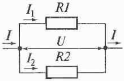

Электрический ток – упорядоченное (направленное) движение электрически заряженных частиц.
Постоянный ток- электрический ток, не меняющийся с течением времени ни по величине, ни по направлению.
Количественной характеристикой электрического тока является сила тока I.
Сила тока –одна из основных величин Международной системы единиц (СИ).
Единица силы тока в СИ-ампер ([I]=A).
За единицу силы тока в СИ принята сила неизменяющегося тока, который при прохождении по двум прямолинейным проводникам бесконечной длины и ничтожно малой площади кругового поперечного сечения, расположенным в вакууме на расстояние 1м один от другого, вызвал бы на каждом участке проводника длиной 1м силу взаимодействия, равную 2*10-7Н.
Единица электрического напряжения в СИ –вольт ([U]=B).
За единицу электрического напряжения в СИ принято электрическое напряжение на концах проводника, при котором работа по перемещению положительного электрического заряда 1КЛ по этому проводнику равна 1Дж.
Действие сторонних сил приводит к разделению разноименных зарядов (поддерживает разность потенциалов в цепи).
Источники тока- устройства, преобразующие различные виды энергии в электрическую.
Источники тока характеризуются электродвижущей силы и внутренним сопротивлением источника.
Единица электродвижущей силы в СИ- вольт ε=B.
За единицу ЭДС в СИ принята ЭДС источника тока, при которой сторонние силы совершают работу 1Дж по перемещению положительного заряда 1Кл вдоль электрической цепи.
Способность веществ пропускать электрический ток характеризуется электрическим сопротивлением R или электрической проводимостью G.
Электрическое сопротивление –величина, характеризующая противодействие проводника (или электрической цепи) установлению в нем электрического тока.
Единица электрического сопротивления в СИ-ом ([R]=Oм).
За единицу электрического сопротивления в СИ принято электрическое сопротивление проводника, в котором при напряжении между его концами, равном 1В, возникает ток силой 1А.
Удельное сопротивление p- величина, характеризующая способность вещества проводить электрический ток, равная электрическому сопротивлению цилиндрического проводника единичной длины и единичной площади поперечного сечения.
Единица удельного сопротивления в СИ-ом- метр ([p]=Ом*м)
За единицу удельного сопротивления в СИ принято удельное сопротивление материала проводника площадью поперечного сечения 1м2 и длиной 1м, имеющего сопротивление 1Ом.
Где p0-удельное сопротивление проводника при температуре 0℃, р - удельное сопротивление проводника при температуре t, a- температурный коэффициент сопротивления, численно равный относительному изменению удельного сопротивления при изменении температуры на 1К.
Единица электрической проводимости в СИ- сименс ([G]=См).
За единицу электрической проводимости в СИ принята электрическая проводимость проводника сопротивлением 1Ом.
Если в цепь последовательно включено несколько источников тока, то полная ЭДС равна алгебраической сумме ЭДС отдельных источников с учетом следующего правила знаков: если при обходе цепи в выбранном направлении ток внутри источника идет в направлении обхода, то ЭДС этого источника считается положительной; если при обходе цепи в выбранном направлении ток внутри источника идет в противоположном направлении, то ЭДС этого источника считается отрицательной.
Электрическое поле при перемещении заряда q по участку цепи совершает работу, равную произведению заряда на напряжение U на концах этого участка цепи: Aэл=qU.
Учитывая, что q=I∆t получим: Аэл=UI∆t. Эту величину часто называют работой тока.
СОЕДИНЕНИЯ ПРОВОДНИКОВ В ЭЛЕКТРИЧЕСКИХ ЦЕПЯХ
Последовательное соединение- соединение, при котором конец одного проводника служит началом другого. Электрическая цепь при таком соединение не содержит разветвлений.
При последовательном соединении проводников:
Параллельное соединение- соединение проводников, при котором начала всех проводников соединены между собой в одной точке (узле) и концы их также соединены между собой в одной точке.
При параллельном соединении проводников:
ИЗМЕРЕНИЕ СИЛЫ ТОКА И НАПРЯЖЕНИЯ
Амперметр-прибор для измерения силы электрического тока. Амперметр включается последовательно с тем участком цепи, в котором измеряют силу тока. Для уменьшения искажающего влияния на результат измерений амперметр должен обладать малым сопротивлением (по сравнению с сопротивлением участка цепи, в котором измеряется сила тока).
Вольтметр- прибор, используемый для измерения электрического напряжения в электрических цепях. Вольтметр включается параллельно участку цепи, на котором измеряется напряжение. Для уменьшения влияния вольтметра на результат измерений его внутреннее сопротивление должно быть большим по сравнению с сопротивлением участка цепи, на концах которого измеряется напряжение.
РАСШИРЕНИЕ ПРЕДЕЛОВ ИЗМЕРЕНИЯ С ПОМОЩЬЮ ШУНТОВ И ДОБАВОЧНЫХ СОПРОТИВЛЕНИЙ
Шунтированием амперметра называется параллельное подключение к амперметру дополнительного сопротивления Rш, с помощью которого амперметр, имеющий сопротивления Rо и рассчитанный на максимальный ток Iо, может измерять токи, превышающие Iо.
При последовательном подключении к вольтметру, рассчитанному на максимальное напряжение Uо, добавочного сопротивления Rд можно измерить напряжение U, превышающее Uо.